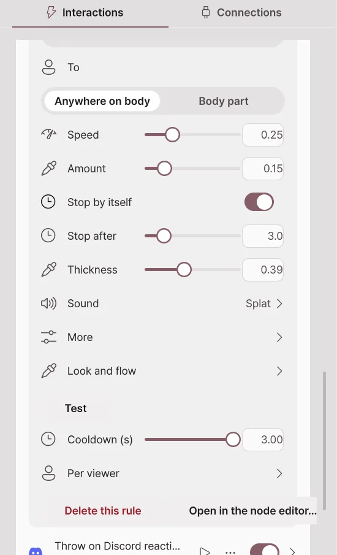
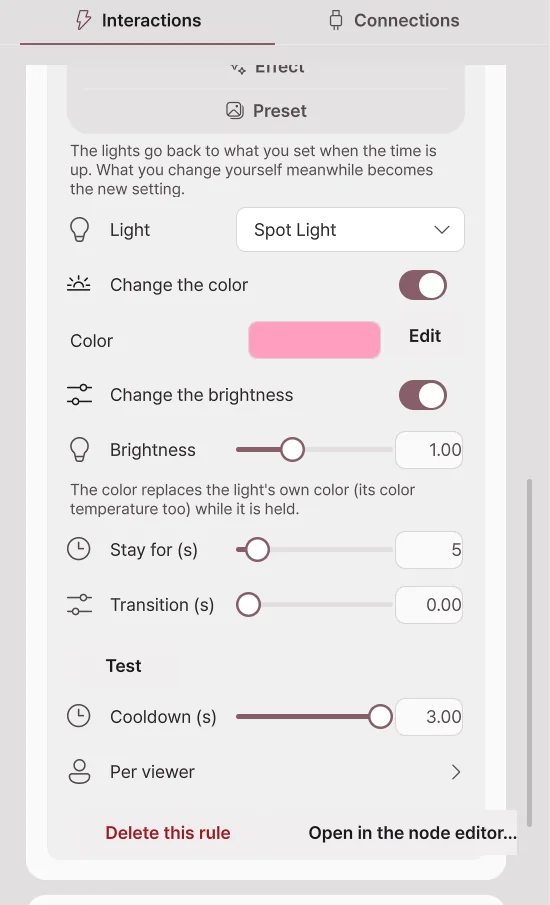
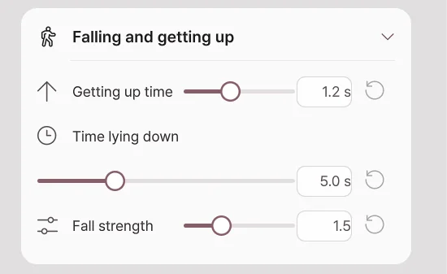
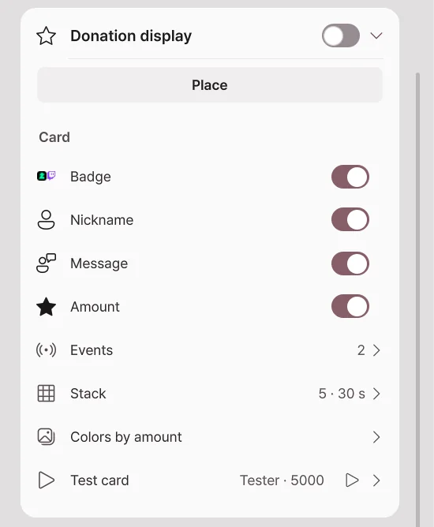
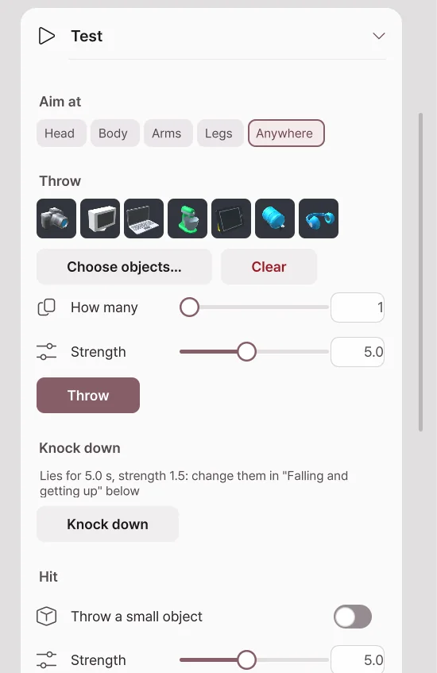

Throw · Liquid · Falling
New in 2.2.0; not available in 2.1.2 or earlier.
These are the avatar reactions that Simple setup items and the Node editor run. They work with any avatar and any camera. They are broadcast integration features, so they need Pro, and they are currently in beta.
Throw
Throws objects from the props library at the avatar. When hit, the avatar is pushed while standing and then comes back.
| Setting | What it does |
|---|---|
| Object | Choose the objects to throw by thumbnail, category or search. If you choose several, one of them is thrown at random each time. |
| From | Where the object flies in from: Off screen, Edge, Above head or Face front. |
| To | Aims at Anywhere on body, or at a body part such as the head, chest or hands. |
| Speed, Weight, Size | How fast and how hard it hits, and the object's size. |
| Count | How many are thrown at once, and the interval. Turn on By amount to add more objects for each donation amount. |
| Sound | Sounds on launch and on hit. You can add your own sound files too. |
| Effect | Plays an Impact, Sparkle, Stars, Dust, Hearts, Drops or Confetti effect on hit. |
| Expression when hit | The expression the avatar makes while being hit. |
| More | Sets gravity, spin, how long it stays, Vanish on hit and Stick on hit. |
Liquid

Choose a liquid (water, juice, milk, honey, slime, ink or gold) and pour it on the avatar. The liquid runs down the body from where it hits, and the avatar looks wet for a while and then dries.
| Setting | What it does |
|---|---|
| From, To | Where the liquid comes from and where it aims. It can also pour from in front of the face. |
| Speed, Amount | How hard and how much it pours. |
| Stop by itself, Stop after | Stops after the set time. When off, it keeps flowing until the rule or the link is switched off. |
| Thickness | 0 flows like water, 1 flows like syrup. |
| Sound | The sound of pouring and flowing. |
| Look and flow | Look values such as color, glow, reflection and surface tension. A PC that cannot run the fluid draws simple drops. |
| Wet look | How the places the liquid touched look wet, and the time to dry. It is the same for every liquid, and by default it dries after 30 seconds. |
Sticker
Sticks your own picture files or folders (one of them at random), online pictures, or animated GIF, APNG and WebP on the avatar. Choose the viewer's picture to fetch and stick the profile picture of the viewer who sent the event.
Light

Turns one light on, off or to the opposite, or briefly applies a color, brightness, effect or preset. After the hold time, your own lighting comes back. The hold time is at least 1 second.
Falling and getting up

When the avatar is hit hard or a knock-down action arrives, it falls to the floor and slowly gets up. Set it in Broadcast → Interactions → Falling and getting up.
| Setting | What it does |
|---|---|
| Fall strength | How hard the avatar is pushed back as it falls. At 0 it collapses right where it stood. |
| Time lying down | How long it lies down before getting up. When a node knocks it down, the node's wait time is used. |
| Getting up time | How long it takes to get up from the floor to its original pose. At 0 it gets up at once. |
For an avatar that cannot fall, the test shows "This avatar cannot fall".
Donation display

Shows donors' names and messages as cards in a box inside the scene. It is off by default.
| Setting | What it does |
|---|---|
| Place | Move and resize the box like an object in the scene. |
| Card | Choose what to show: badge, nickname, message and amount. |
| Events | The events to show: CHZZK donations, Twitch bits, subscriptions and channel points. |
| Stack | Number of cards, display time, message length and minimum amount. |
| Colors by amount | Changes the card color for each amount range. |
| Test card | Enter a nickname, message and amount to add one card as a try. |
Test

On the Test card at the bottom of Broadcast → Interactions, try reactions right away with no rule or event. One button runs one reaction once.
| Button | What it does |
|---|---|
| Throw | Throws objects with the aim, strength and count you set. With no object chosen, a random one from the library is used. |
| Knock down | Knocks the avatar down. |
| Hit | Shows the reaction when the chosen part is hit, once. Turn on Throw a small object to have an object fly in too. |
| Pour liquid | Pours with the amount and direction you set (At the face, From above, From the left, From the right). |
| Sticker | Sticks one of your pictures at random. |
| Reset | Removes the objects, liquid and stickers in the scene and puts the avatar back in its original pose. |